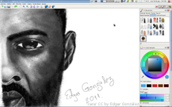
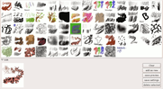
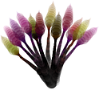

MyPaint
Dieser Artikel wurde für die folgenden Ubuntu-Versionen getestet:
Ubuntu 16.04 Xenial Xerus
Ubuntu 14.04 Trusty Tahr
Zum Verständnis dieses Artikels sind folgende Seiten hilfreich:
Pakete aus dem Quellcode erstellen, optional
Archive entpacken, optional
Programme mit SCons kompilieren, optional
MyPaint  ist ein freies plattformübergreifendes Grafikprogramm speziell für den Einsatz zusammen mit einem Grafiktablett, wie sie z.B. von der Firma Wacom hergestellt werden. Damit lässt sich auf dem Rechner wie auf Leinwand oder Papier malen, sei es mit Bleistift, Kreide oder Pinsel (Beispiele ).
ist ein freies plattformübergreifendes Grafikprogramm speziell für den Einsatz zusammen mit einem Grafiktablett, wie sie z.B. von der Firma Wacom hergestellt werden. Damit lässt sich auf dem Rechner wie auf Leinwand oder Papier malen, sei es mit Bleistift, Kreide oder Pinsel (Beispiele ).

MyPaint ist nicht für das Zeichnen mit einer Maus geeignet. Das Besondere an der Arbeit mit MyPaint und einem Grafiktablett ist die Unterstützung der Druckempfindlichkeit sowie deren Konfiguration und Einsetzbarkeit beim Zeichnen. Damit kann der Weg über einen Scanner ausgelassen werden, um eigene Schöpfungen zu digitalisieren.
MyPaint grenzt sich deutlich von anderen Projekten wie z.B. GIMP ab, die eine komplette Grafik-Suite anbieten und kommt mit seiner schlanken Programmierung dem effizienten Zeichnen entgegen. Das Programm bietet eine überschaubare Anzahl an nützlichen Features und ein Maximum an Konfigurierbarkeit.
Installation¶
MyPaint ist in den offiziellen Paketquellen enthalten. Folgendes Paket muss installiert [1] werden:
mypaint (universe)
 mit apturl
mit apturl
Paketliste zum Kopieren:
sudo apt-get install mypaint
sudo aptitude install mypaint
Version 1.1 wurde im Januar 2013 veröffentlicht und kann ab Ubuntu 13.10 installiert werden. Die Version 1.2 von Januar 2016 ist für Ubuntu 16.04 in den Quellen, die neuer 1.2.1-Version derzeit (August 2017) über ein PPA verfügbar.
Aus dem Quelltext¶
Bevor man das Programm aus dem Quelltext kompilieren kann [2], muss man zuvor noch die Abhängigkeiten erfüllen. Folgende Pakete müssen installiert [1] werden:
python-dev
libglib2.0-dev
python-numpy
swig
scons
g++
intltool
checkinstall
mit apturl
Paketliste zum Kopieren:
sudo apt-get install python-dev libglib2.0-dev python-numpy swig scons g++ intltool checkinstall
sudo aptitude install python-dev libglib2.0-dev python-numpy swig scons g++ intltool checkinstall
Den Quelltext findet man auf der Projektseite  . Nach dem Herunterladen wird die Archivdatei entpackt [3]. Nun wechselt man in den neu entstandenen Ordner und kompiliert den Quelltext [4]:
. Nach dem Herunterladen wird die Archivdatei entpackt [3]. Nun wechselt man in den neu entstandenen Ordner und kompiliert den Quelltext [4]:
scons
Wenn der Quelltext fehlerfrei kompiliert worden ist, kann man MyPaint direkt über die Datei mypaint im selben Ordner starten:
./mypaint
Oder man kann das Programm normal im System installieren: [2]
sudo checkinstall scons install
Benutzung¶
Arbeitsfläche¶
Die Arbeitsfläche ist beim ersten Start frei von Werkzeugleisten und Dialogen. Es handelt sich um eine dynamische Arbeitsfläche ohne Rahmen. Praktisch lassen sich damit beliebige große Leinwände benutzen, ohne dass man am Anfang eine feste Größe einstellen muss. Unter "Dialogs" lassen sich alle Dialoge einblenden.
| Dialoge | |
| Name | Beschreibung |
| Pinselliste ("Brush List") | Hiermit lässt sich die große Liste an mitgebrachten Pinseln anzeigen und anpassen. Neue Pinsel lassen sich über den Button "Edit -> Add as new" hinzufügen. |
| Pinseleinstellungen ("Brush Settings") | Der verwendete Pinsel lässt sich nicht nur in Größe, Deckkraft und Erscheinungsbild an die eigenen Bedürfnisse anpassen, in diesem lässt sich das Programm beinahe vollständig anpassen. |
| Farbauswahl ("GTK Color Dialog") | Hier lässt sich die Farbe des aktuellen Pinsels mit einem Farbdreieck auswählen. Mit der Pipette lassen sich Farben auf dem ganzen Desktop einfach übernehmen. |
Pinsel¶
  MyPaint bietet bereits zu Beginn eine große Auswahl an Pinseln, welche von Hand erweitert werden können. Das Programm stellt hierfür eine in den Pinselauswahl-Dialog integrierte Editierfunktion bereit.
Neben gewöhnlichen Pinseln, wie man sie aus Projekten wie GIMP kennt, hat sich der Entwickler auch ausgefallenere Pinsel ausgedacht. So existiert z.B. ein eigener Pinsel, der je nach Druck und Strichgeschwindigkeit verschiedene Farben annimmt, mit dem Blumengebilde wie rechts abgebildet möglich sind. Jeder Stiel inkl. Blüte ist aus einem Pinselstrich entstanden.
Alternativen¶
Auch andere Grafikprogramme unterstützen den Einsatz eines Grafiktabletts, aber nicht zwangsläufig den Funktionsumfang von MyPaint:
- Erstellt mit Inyoka
-
 2004 – 2017 ubuntuusers.de • Einige Rechte vorbehalten
2004 – 2017 ubuntuusers.de • Einige Rechte vorbehalten
Lizenz • Kontakt • Datenschutz • Impressum • Serverstatus -
Serverhousing gespendet von